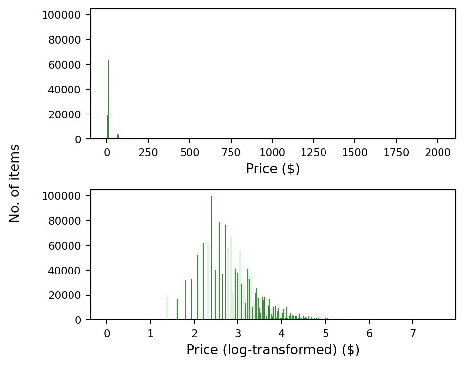
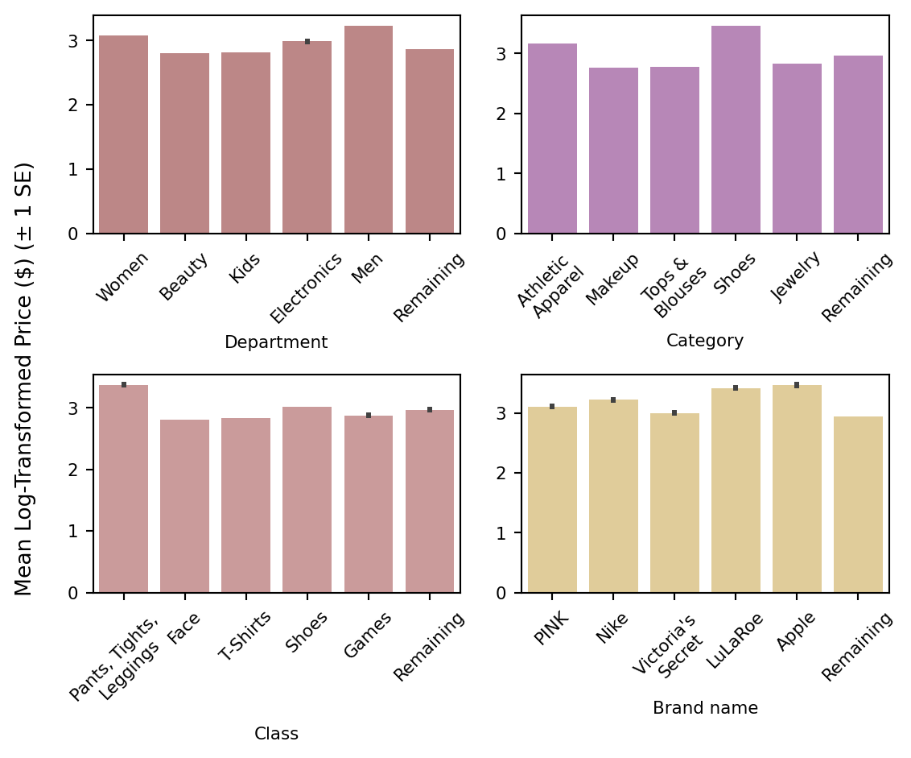
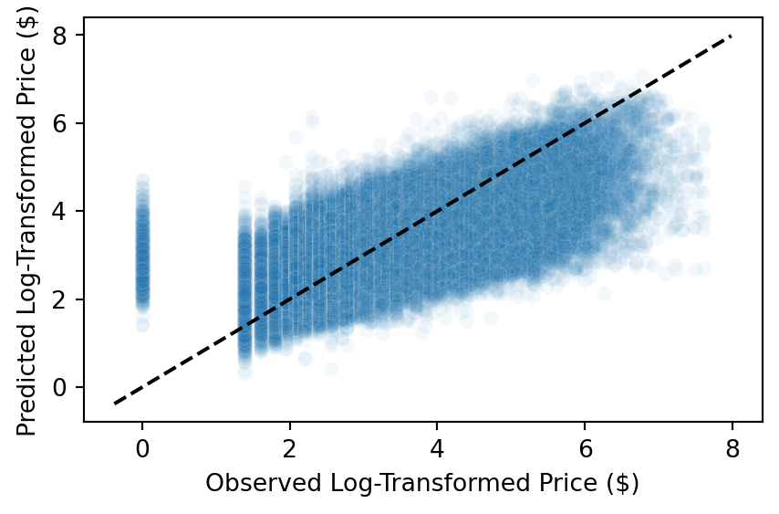
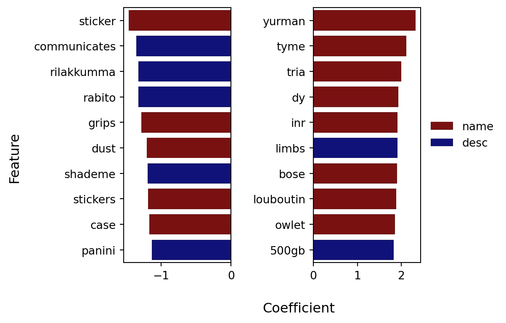

From text to price: Predicting Mercari item prices with machine learning
I. Executive Summary
The Mercari marketplace app is Japan’s most popular community-driven platform to buy and sell clothing, books, electronics, and collectibles. Listings contain structured fields (e.g., brand, item condition, shipping) and unstructured fields (e.g., name, description), making them ideal for a machine learning model that combines numeric, categorical, and text-derived features to predict prices. Ridge Regression, Random Forest, and XGBoost models were trained using cross-validation on a resource-limited machine (8 GB RAM). Initial results showed Ridge Regression (root mean-squared log error (RMSLE) = 0.496) and XGBoost (RMSLE = 0.586) performed best. After hyperparameter tuning, Ridge Regression achieved the lowest RMSLE (0.496). Future improvements include additional features, more complex models, and training at scale.
II. Data Exploration
A. Dataset description
The training set comprises 1,482,535 rows and eight columns. Structured fields include train_id (integer identifier), item_condition_id (numerical category of product condition: 1 = new, 2 = fairly new, 3 = good, 4 = bad, 5 = very poor), shipping (binary: 0 = paid by buyer, 1 = paid by seller), and brand_name (categorical: name of the product’s brand). Text fields consist of category_name (hierarchical category information), name (product name), and item_description (product description). The target variable is price (numerical).
B. Preprocessing summary
Missing values: Only three columns had missing values: brand_name (632,682), category_name (6,327), and item_description (6). Roughly 57% of rows were complete, and no row had more than one missing value. item_description entries labeled as ‘No description yet’ were treated as missing and replaced with ‘No item description’, the same as true missing values. Missing brand_name and category_name values were replaced with ‘Unknown’ and ‘Unknown/Unknown/Unknown’, respectively.
Categorical mapping: category_name was split on ‘/’ into three hierarchical fields: department (11 categories), category (114 categories), and class (872 categories).
C. Exploratory Feature Engineering (Discovery Phase)
Log price: Univariate and bivariate plots showed strong skew in the price data (Fig. 1), so the target variable was transformed using a natural log plus one: price_log.
Note: Most items are concentrated at lower price ranges; a few rare items have much higher prices that are not visible in the raw price histogram.
Text length / word count features: Word counts and character lengths were calculated for the name and item_description fields. Because word counts and lengths were highly correlated (name: \(\rho\) = 0.885; item_description: \(\rho\) = 0.993), name_wc and desc_len were retained due to their stronger correlation with price_log (\(\rho\) = 0.0523 and 0.0684, respectively; Table 1).
| Feature | Data Field | Metric | Range | Correlation with price_log (\(\rho\)) |
|---|---|---|---|---|
| name_wc | name | word count | 1-17 | 0.0523 |
| name_len | name | length | 1-43 | 0.0498 |
| desc_wc | item_description | word count | 1-245 | 0.0681 |
| desc_len | item_description | length | 1-1046 | 0.0684 |
Target-mean encoding: item_condition_id was target-mean encoded due to its relationship with the target variable.
Rare-label and target-mean encoding: Given the large numbers of categories in the four categorical fields (department, category, class, brand_name), the five most frequent known categories of each variable were retained while the remainder were binned into a single category, “Remaining.” Their relationships with mean log-transformed prices were visualized (Fig. 2), showing variability across categories per encoded variable and thus more potential features.

Boolean presence/absence: Boolean indicators were created to capture the presence of values in category_name, brand_name, and item_description (i.e., has_cat_name, has_brand, has_desc, respectively). Each feature was set to True when the corresponding field contained a known value and False otherwise.
Boolean keyword matches: Keyword groups from item_description (i.e., new, used, authentic, rare, set) were used to create Boolean indicators capturing item-specific characteristics relevant to pricing.
Remaining features: Structured features like item_condition_id and shipping were retained for modeling due to their clear interpretation and relevance to the target variable.
III. Feature Engineering & Modeling
A. Final Feature Set
The final feature set combined deterministic and pipeline-dependent features, engineered manually or in-pipeline as needed. Ridge Regression used the 16 core features listed in Table A1, while Random Forest and XGBoost included these plus 5 additional pipeline-dependent transformations (Table A2), giving 21 features total. This conveys the dimensionality of each model: all share the same core features, with tree-based models expanded for one-hot or target-mean encoded top categories.
B. Feature engineering process
Feature engineering was split into two phases: pre-pipeline and within the pipeline, ensuring consistency and preventing data leakage.
1. Pre-pipeline
Certain features were engineered outside the pipeline, as they were deterministic and independent of data distributions. These included:
- Word counts and lengths for item names (name_wc) and item descriptions (desc_len)
- Boolean indicators marking the presence of data in specific fields, such as has_cat_name
- Keyword-related indicators for clusters of terms in item_description (e.g., has_keyword_new_like)
- Log-transformation of the target variable (price_log)
2. Within pipeline
All data-dependent transformations were performed inside the modeling pipeline to prevent data leakage during cross-validation. These transformations included:
Scaling and transformation of numeric features: name_wc was min–max scaled, while desc_len was log-transformed deterministically, with both processed together for consistent treatment.
Text vectorization: TF-IDF was applied to name and item_description, with the number of features determined experimentally (e.g., 25,000 for name, 30,000 for item_description in Ridge Regression, and lower counts for Random Forest and XGBoost models for efficiency).
Dimensionality reduction: For tree-based models (Random Forest and XGBoost), high-dimensional sparse matrices were reduced using Truncated SVD to ensure computational efficiency without compromising model performance.
Categorical encoding: For Random Forest and XGBoost, the top 5 known categories of variables like department, category, class, and brand were rare-label encoded and one-hot encoded to reduce dimensionality. Ridge Regression used only target-mean encoding of the categories.
Item condition handling: While Ridge Regression relied on the original item_condition_id, both tree-based models benefited from target-mean encoding of this feature, in addition to retaining the original, improving performance without overfitting.
C. Modeling workflow
Models were fit and tuned using cross-validation on the training set, split into three folds. The average RMSLE was calculated for each model. Initial configurations were as follows:
- Ridge Regression: \(\alpha\) values of 0.1, 1.0, and 10.0.
- Random Forest: 50 trees, max depth of 10, minimum samples per leaf = 5, max features per split = square root of the total feature number
- XGBoost: Max of 100 trees, max depth = 4, learning rate = 0.2, subsample rate = 0.7
The Ridge Regression model with \(\alpha = 1.0\) performed the best (RMSLE = 0.4959), while the Random Forest model had the weakest fit (RMSLE = 0.6342; Table 2).
| model | \(\alpha\) | RMSLE |
|---|---|---|
| Ridge Regression | 0.1 | 0.5002 |
| Ridge Regression | 1.0 | 0.4959 |
| Ridge Regression | 10.0 | 0.4979 |
| Random Forest | N/A | 0.6342 |
| XGBoost | N/A | 0.5858 |
D. Hyperparameter tuning
Ridge Regression and XGBoost models were tuned to optimize performance on the training set. For Ridge Regression, models were fit with \(\alpha\) values of 0.5 (RMSLE = 0.4973) and 5.0 (RMSLE = 0.4956), both close to the best-performing model from the initial batch.
XGBoost tuning involved a hyperparameter search space of 192 combinations, with 8 random selections yielding an RMSLE improvement of ~0.023 (final RMSLE = 0.5632).
The Ridge Regression model with \(\alpha = 0.5\) outperformed all other models on the Mercari training set with these features.
IV. Results & Interpretation
Figure 3 shows that the model tends to over-predict log prices.

The top 10 most impactful features, both positive and negative, in the final model are all TF-IDF features (Fig. 4). Among the most influential positive features were yurman, tyme, and tria (all from name), while the most impactful negative features were sticker (from name), communicates (from item_description), and rilakkumma (from item_description).

Among non-TF-IDF features, name_wc and target-mean encoded category and department had the strongest positive influence on price (coefficients > 0.4), while shipping was most negative (coefficient < -0.2).
V. Conclusion & Next Steps
A. Key Takeaways
Ridge Regression outperformed more complex models: Despite testing several algorithms, Ridge Regression with \(\alpha = 5.0\) provided the best performance. This shows that simpler models, when well-tuned, can be highly effective in noisy and resource-limited environments.
Text features were dominant: TF-IDF features from name and item_description contributed most to the top coefficients, significantly lowering RMSLE for Ridge Regression. This emphasizes the importance of thoughtful text preprocessing and feature extraction, even with limited compute resources.
Non-text features showed strong predictive power: name_wc, target-mean encoded category, and target-mean encoded department* had the largest coefficients among non-TF-IDF features (absolute values > 0.4). This demonstrates that structured metadata, like category and department, plays a key role in pricing models.
B. Future Improvements
Refine feature engineering: Experiment with n-grams (bigrams, trigrams) for item_description to capture more nuanced product information.
Explore brand–category interactions: Analyze finer-grained brand–category combinations to uncover patterns affecting pricing.
Binning brands: Group brands into price tiers (e.g., high-end vs. budget) to better isolate pricing patterns.
Experiment with more complex models: Advanced approaches such as LightGBM, stacked ensembles, or deep learning could improve generalization, especially with more computational resources.
VI. Appendix
| Feature | Data Type | Pipeline-dependent? | Notes |
|---|---|---|---|
| item_condition_id | Ordinal | No | Retained as is |
| shipping | Binary | No | Retained as is |
| name_wc | Numeric | Yes | Word count of name, min-max scaled in pipeline |
| desc_len | Numeric | Yes | Length of item_description, log-transformed deterministically; processed in pipeline with name_wc |
| has_cat_name | Binary | No | 1 if category_name contains a known value, 0 otherwise |
| has_brand | Binary | No | 1 if brand_name contains a known value, 0 otherwise |
| has_desc | Binary | No | 1 if item_description contains a known value, 0 otherwise |
| has_keyword_new_like | Binary | No | 1 if item_description contains ‘new’ or similar, 0 otherwise |
| has_keyword_authentic_like | Binary | No | 1 if item_description contains ‘authentic’ or similar, 0 otherwise |
| has_keyword_used_like | Binary | No | 1 if item_description contains ‘used’ or similar, 0 otherwise |
| has_keyword_rare_like | Binary | No | 1 if item_description contains ‘rare’ or similar, 0 otherwise |
| has_keyword_set_like | Binary | No | 1 if item_description contains ‘set’ or similar, 0 otherwise |
| department_top5_lprice | Numeric | Yes | Rare-label top 5 + remainder, then target-mean encoded |
| category_top5_lprice | Numeric | Yes | Rare-label top 5 + remainder, then target-mean encoded |
| class_top5_lprice | Numeric | Yes | Rare-label top 5 + remainder, then target-mean encoded |
| brand_name_top5_lprice | Numeric | Yes | Rare-label top 5 + remainder, then target-mean encoded |
| name | Text | Yes | TF-IDF vectorized, then truncated SVD (RF & XGB only) |
| item_description | Text | Yes | TF-IDF vectorized, then truncated SVD (RF & XGB only) |
| price_log | Numeric | No | Target variable, scaled for model |
| Feature | Data Type | Pipeline-dependent? | Notes |
|---|---|---|---|
| department_top5 | Binary | Yes | Rare-label top 5 + remainder, then one-hot encoded |
| category_top5 | Binary | Yes | Rare-label top 5 + remainder, then one-hot encoded |
| class_top5 | Binary | Yes | Rare-label top 5 + remainder, then one-hot encoded |
| brand_name_top5 | Binary | Yes | Rare-label top 5 + remainder, then one-hot encoded |
| item_cond_lprice | Numeric | Yes | Target-mean encoded |